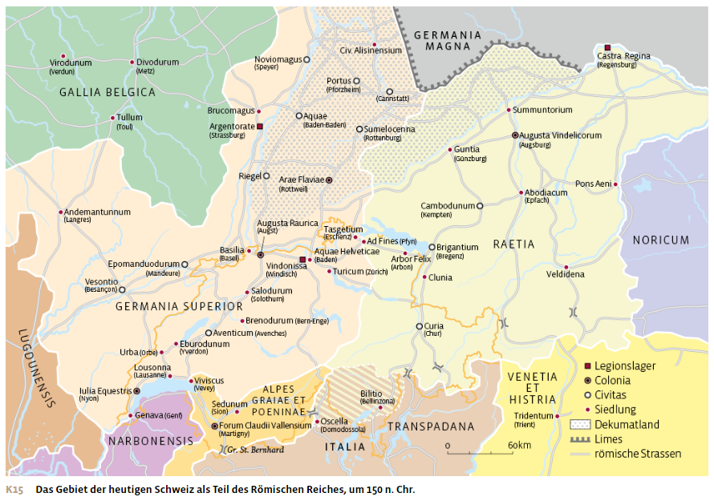
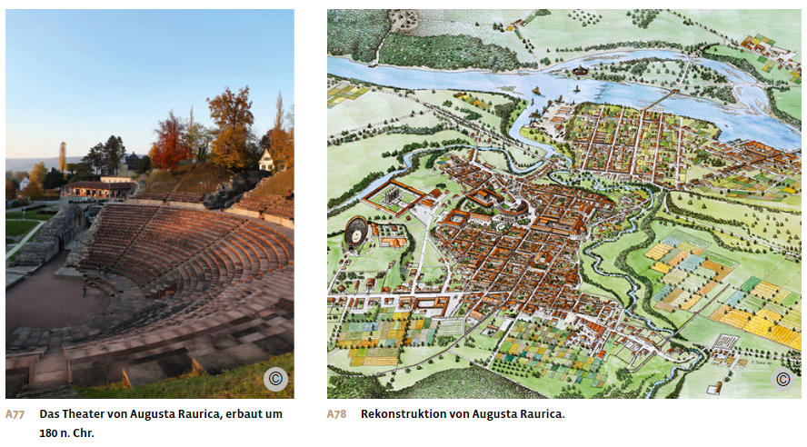
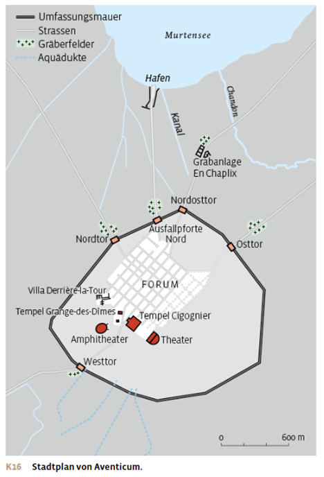
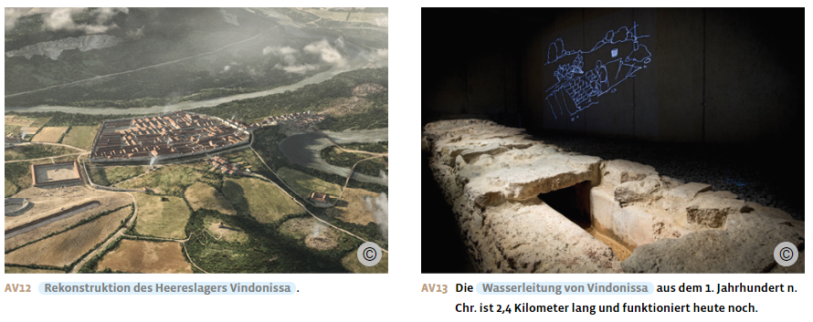
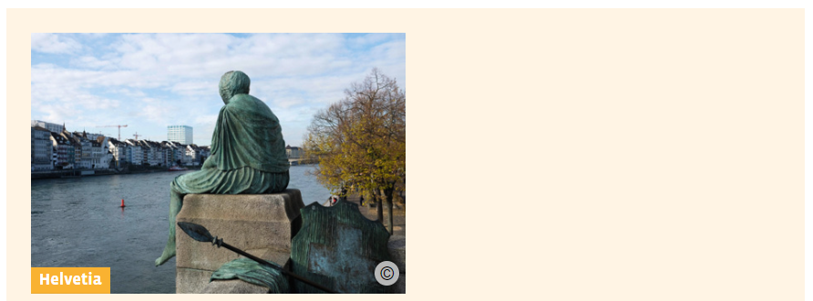
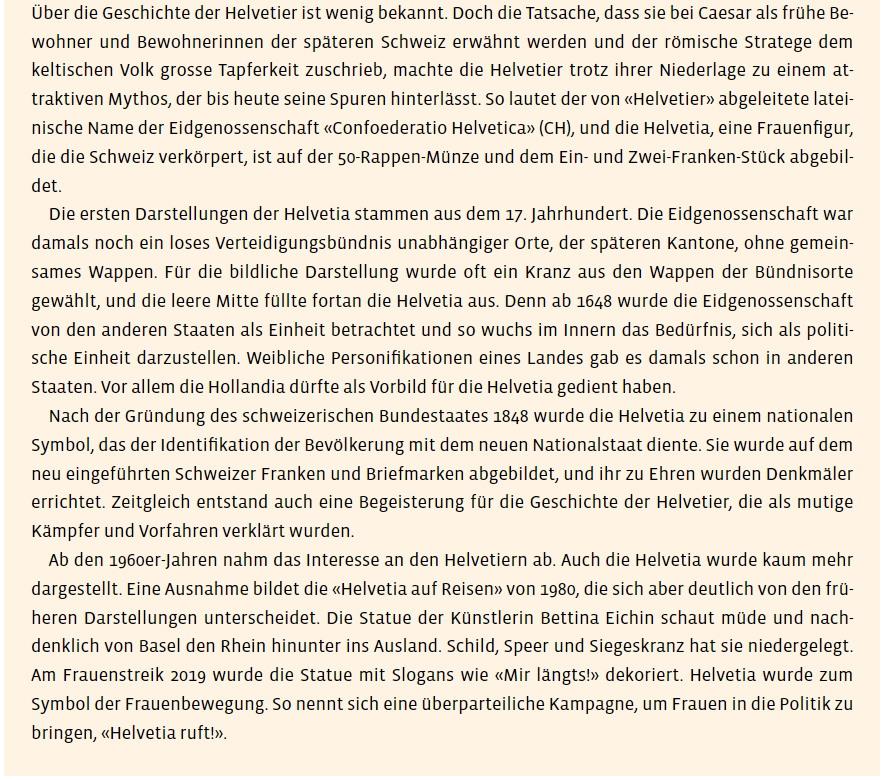
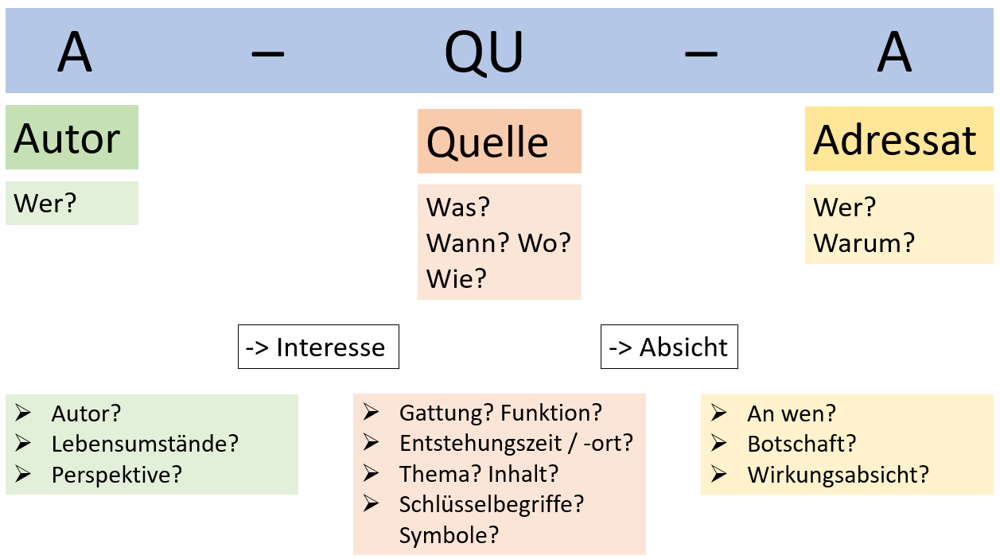

Materialdossier: Rom in der Schweiz
Vollständiger Inhalt des Unterrichtsdossiers · Römische Antike_Schweiz.docx
Das Gebiet der heutigen Schweiz als Teil des römischen Reiches

Die Eroberung des Gebiets der späteren Schweiz
In der Region zwischen Genfer- und Bodensee lebten im 1. Jahrhundert v. Chr. die Helvetier, ein keltisches Volk. Schon in der späten Republik geriet das Gebiet ins Blickfeld von Rom. Caesar, der damals die Statthalterschaft im heutigen Südfrankreich innehatte, berichtete 58 v. Chr., dass die Helvetier im Begriff waren, ihre gesamte Bevölkerung an die Atlantikküste umzusiedeln, da sie in ihrer Heimat ständig von Einfällen der Germanen bedroht wurden, die nördlich des Rheins lebten. Eine solche Migration war damals durchaus üblich.
Nach Caesars Darstellung überschritt das Volk bei Genava, dem heutigen Genf, die Rhone und wollte das Gebiet der mit Rom verbündeten Allobroger durchqueren. Caesar betrachtete diese Wanderung als Sicherheitsrisiko für die römische Provinz Gallia Transalpina. Vor allem aber sah er wohl die Chance, im Kampf gegen die Helvetier, die «tapfersten Gallier», Beute und Ruhm zu gewinnen. Caesar stellte sich mit seinem Heer den nach Westen ziehenden Helvetiern entgegen. Bei Bibracte im heutigen Burgund konnte er sie schlagen und zur Rückkehr zwingen.
Caesars Tatenbericht schildert die Ereignisse aus der Sicht des Feldherrn, der sein Vorgehen vor dem römischen Publikum rechtfertigen will. Dennoch verrät der Bericht Interessantes über die helvetische Kultur: Laut Caesar gab es im Mittelland zwölf grössere Siedlungen («oppida») und zahlreiche Dörfer. Offensichtlich verfügten die Helvetierinnen und Helvetier auch über eine entwickelte Verwaltung: Die Vorbereitung des Auszugs aus dem Mittelland dauerte zwei Jahre, war also langfristig geplant und organisiert. Zudem fand Caesar bei den Helvetiern Listen in griechischer Schrift mit den Namen aller, die am Auszug teilgenommen hatten; es muss also zu Beginn des Vorhabens eine Art Volkszählung stattgefunden haben, deren Ergebnisse dann schriftlich festgehalten wurden.
Mit dem Sieg Caesars geriet das Mittelland unter römische Kontrolle. Einige Jahrzehnte später unterwarf Augustus auch den Alpenraum. Im Laufe des 1. Jahrhunderts n. Chr. wurde das Gebiet in Provinzen eingeteilt: Das Mittelland und die westlichen Alpen gehörten zu Germania Superior (Obergermanien), die Ostalpen mit Curia Raetorum (Chur) zur Provinz Raetia.
Die Grenze zum freien Germanien bildete zunächst der Rhein. Gegen Ende des 1. Jahrhunderts n. Chr. dehnten die Römer ihre Herrschaft auf das heutige Südwestdeutschland aus, das sogenannte Dekumatland. Damit war das Gebiet der heutigen Schweiz für knapp 200 Jahre keine militärisch bedrohte Grenzregion mehr, und es konnten sich hier die typischen Romanisierungsprozesse vollziehen, wie sie auch anderswo in den Provinzen des Reichs stattfanden.

Die Romanisierung der Helvetier
Rom gründete im helvetischen Gebiet zwei coloniae: die colonia Iulia Equestris, heute Nyon, und die colonia Augusta Raurica, heute Augst. Diese Ansiedelungen römischer Bürger, zum Teil Veteranen, dienten der Machtsicherung in den unterworfenen Gebieten. Hinzu kam ein grosses Heereslager, das 14 n. Chr. in Vindonissa, heute Windisch, gebaut wurde. Zudem entstanden oder vergrösserten sich unter römischer Herrschaft zahlreiche Städte, die durch ein dichtes Strassennetz miteinander verbunden waren, zum Beispiel Genava (Genf), Lousonna (Lausanne), Eburodunum (Yverdon), Salodurum (Solothurn), Turicum (Zürich).
Das eigentliche Zentrum der unter römischer Herrschaft lebenden Helvetierinnen und Helvetier wurde Aventicum (Avenches). Die Stadt am Murtensee entstand um das Jahr 0, wohl aus einer bereits bestehenden keltischen Siedlung. Ein Kanal führte von der Siedlung zum See und schloss den Ort an die schiffbaren Hauptverkehrswege durch das Mittelland an. Die Stadt wies viele typische römische Elemente auf, wie sie im ganzen Reich verbreitet waren. So folgte der Grundriss der Stadt dem beliebten Schachbrettmuster: Die Strassen schnitten sich rechtwinklig. Dadurch entstanden kleine Einheiten, sogenannte «insulae», in denen Wohnhäuser, Tempel oder Wirtschaftsgebäude errichtet wurden. Im Zentrum befand sich das Forum, das als Markt- und Versammlungsplatz diente und auf dem ein grosser Tempel stand. Zur Stadt gehörten auch öffentliche Thermen, die sich direkt neben dem Forum befanden. Wichtig waren zudem die Vergnügungsmöglichkeiten. So gab es in Aventicum sowohl ein Theater für Dramen und Singstücke als auch eine Arena, ein Amphitheater für blutige Gladiatoren- und Tierspiele. Beide Bauten sind heute noch erhalten.

Aventicum war bei seiner Gründung das Zentrum einer civitas, einer Gemeinde, deren Bewohner mehrheitlich Peregrine, also nichtrömische Bürger waren. Angehörige der Oberschicht erhielten jedoch bereits im 1. Jahrhundert n. Chr. das römische Bürgerrecht. Auch hier wurden also die lokalen Eliten zur Förderung ihrer Loyalität in die römische Gesellschaft integriert. Sie erhielten damit die Möglichkeit, über eine Verwaltungslaufbahn oder einen langjährigen Militärdienst Karriere und Geld zu machen.
Um 70 n. Chr. erhielt Aventicum von Rom den ehrenvollen Status einer colonia. Damit begann die Blütezeit der Stadt. Im 2. Jahrhundert n. Chr. lebten in Aventicum rund 15000 Menschen. Die in der Stadt gefundenen Inschriften sind in lateinischer Sprache verfasst. Die keltische Sprache der Helvetier mag zwar noch gesprochen worden sein, wurde aber für offizielle Schriftstücke nicht verwendet. Dies deutet darauf hin, dass sich die helvetische Bevölkerung im Verlauf der Zeit mit der römischen Herrschaft arrangiert hatte und sich als Teil der römischen Zivilisation verstand. Dies belegen auch Funde in Gutshöfen, sogenannten «villae», im Mittelland: Die einheimische Oberschicht schmückte ihre Häuser mit Mosaiken, die Szenen aus der griechisch-römischen Mythologie zeigen.
Die Stadt Augusta Raurica (Augst) wurde 44 v. Chr. am Südufer des Rheins gegründet. Im Gegensatz zu Aventicum war die Siedlung von Anfang an eine römische colonia, das heisst, die Gründung geschah auf Geheiss Roms und die Einwohner erhielten mit der Gründung der Stadt auch gleich das römische Bürgerrecht. Im Stadtbild unterscheidet sich Augusta Raurica kaum von Aventicum, sondern weist ebenfalls die typischen römischen Elemente auf: ein schachbrettartiges Strassennetz, ein Forum, Tempelbauten, Theater, Amphitheater, Aquädukte, Thermen, Stadtmauer. Auch hier lebten zur Blütezeit etwa 15000 Menschen. Die römische Kultur und Zivilisation übte eine grosse Anziehungskraft auf die lokale Bevölkerung aus.
Obwohl Aventicum ursprünglich eine civitas und Augusta Raurica eine colonia war, vermischten sich in beiden Städten im Laufe der Zeit die römische und die einheimische Bevölkerung. Beide Siedlungen entwickelten sich zu typisch römischen Provinzstädten. Die Strassen, die diese Städte miteinander verbanden, waren zum Teil 6 bis 8 Meter breit. Sie ermöglichten schnelle Truppenbewegungen und förderten den reichsweiten Handel. So fanden sich in Augusta Raurica Amphoren aus Iberien (Spanien) und Gallien, aber auch aus Italien und dem östlichen Mittelmeerraum. Gleichzeitig wurden zahlreiche Gegenstände typisch keltischer Herkunft entdeckt, zum Beispiel Schutzamulette, Kinderrasseln und Fibeln, also Nadeln zum Verschliessen von Gewändern. Die Funde aus diesen Städten belegen also nicht nur den Erfolg der Romanisierung, sondern auch die Herausbildung einer römisch-keltischen Mischkultur.
Das Heereslager Vindonissa
Da das Mittelland sowohl im 1. Jahrhundert n. Chr. als auch in der Spätantike Grenzgebiet war, wurde hier römisches Militär stationiert: In Vindonissa (Windisch) errichteten die Römer ein Lager, in dem eine Legion mit rund 5500 Mann untergebracht war. Vindonissa lag am Zusammenfluss von Aare und Reuss im Hinterland des Rheins. Diese Lage ermöglichte es, rasch Truppen an die gefährdeten Grenzabschnitte im Norden zu schicken. Zudem erleichterten Aare und Reuss die Verteidigung des Lagers und boten Transportmöglichkeiten in alle Richtungen. So konnte die Legion nicht nur bei Angriffen von aussen, sondern auch bei allfälligen inneren Unruhen rasch eingreifen.
Ein römisches Lager glich in seiner Grundstruktur einer römischen Stadt: Auch hier gab es zwei Hauptachsen, die sich im Zentrum des Lagers, beim Fahnenheiligtum, kreuzten. Das Lager verfügte über Kasernen für die Legionäre, Wirtschaftsgebäude wie Küchen und Vorratskammern. Hinzu kamen Thermen und luxuriöse Wohnbereiche für den Legionskommandanten und die Offiziere. Auch ein Amphitheater zur Unterhaltung fehlte nicht. Ausserhalb der Stadt entstand eine Siedlung, die wirtschaftlich vom Lager profitierte. Hier konnten die Legionäre Dinge für den persönlichen Bedarf einkaufen. Beziehungen zwischen Soldaten und einheimischen Frauen waren jedoch verboten: Man wollte vermeiden, dass die Legionäre während ihrer Dienstzeit Familien gründeten und sich diesen mehr verpflichtet fühlten als dem Heer. Da aber dennoch viele Soldaten Kinder mit Einheimischen zeugten, legalisierte schliesslich Kaiser Septimius Severus um das Jahr 200 n. Chr. diese Verbindungen.

Die Alamanneneinfälle
Zu Beginn des 3. Jahrhunderts n. Chr. fielen die Alamannen, ein Zusammenschluss verschiedener germanischer Gruppen, wiederholt ins Dekumatland ein. Zwischen 280 und 260 v. Chr. gaben die Römer das Gebiet schliesslich auf und zogen sich bis an den Rhein zurück. Das Schweizer Mittelland lag nun wieder unmittelbar an der Grenze zum sogenannten freien Germanien. Die Grenze konnte nicht immer gesichert werden, Alamannen unternahmen Raubzüge bis tief in das römische Reichsgebiet, gelangten gar bis nach Italien. Die Blütezeit der helvetisch-römischen Kultur ging zu Ende, Handel und Wirtschaft gingen zurück. Im späten 3. Jahrhundert n. Chr. gab man Teile der Stadt Augusta Raurica infolge der alamannischen Bedrohung auf. Danach bauten römische Soldaten dort eine kleine Festung, doch 352 n. Chr. fielen erneut die Alamannen ein. Kurz darauf wurde Aventicum zerstört. Im 5. Jahrhundert n. Chr. zogen die Römer schliesslich ihre Truppen aus dem Mittelland ab.
Die Alamannen und andere germanische Gruppen liessen sich danach in den zentralen und östlichen Regionen der späteren Schweiz nieder. Sie brachten ihre eigene Sprache mit, während sich in den westlichen Teilen des Mittellands und im bereits besiedelten Teil der Alpen die lateinische Sprache hielt. Die heutige Mehrsprachigkeit der Schweiz geht auf die damalige Situation zurück – und ist damit ein unmittelbares Erbe der Antike.
Aus: Notz, Thomas; Frey, Walter (Hg.): Geschichte fürs Gymnasium. Steinzeit bis 1450. Bern 2024, S. 210-214.


Notz, Thomas; Frey, Walter (Hg.): Geschichte fürs Gymnasium. Steinzeit bis 1450. Bern 2024, S. 210.
Aufträge
1. Was erfahren wir über die Helvetier?
2. Warum sind die Helvetier als Vorfahren ein attraktiver Mythos für die Schweiz, und weshalb ist diese Deutung historisch nicht präzise?
3. Aus welchem Grund geht Caesar gegen die Helvetier vor? Und was ist die Folge?
4. Was bedeutet Romanisierung? Welche Schattenseiten bringt ein solcher Prozess mit sich?
5. Zeige anhand von Aventicum, Augusta Raurica und Vindonissa auf, worin sich die römischen Siedlungen auf dem Gebiet der heutigen Schweiz unterschieden.
6. Was sind typische Elemente einer römischen Stadt?
7. Was erfahren wir über die Alemannen?
Quelle: Caesar: De bello gallico
Caesar (100–44 v. Chr.) über die Situation nach der helvetischen Niederlage bei Bibracte, 58 v. Chr.
In seinem Werk über den Gallischen Krieg schildert Caesar auch seinen Sieg über die Helvetier. Die folgende Passage beschreibt die Situation nach der helvetischen Niederlage bei Bibracte, nach der Caesar die Helvetier zwang, in ihre Heimat zurückzukehren.
So wurde lange und heftig nach zwei Seiten gekämpft. Als die Helvetier jedoch dem Ansturm unserer Soldaten nicht länger standhalten konnten, zog sich ein Teil wie zuvor auf die Anhöhe zurück, die anderen wandten sich zum Tross und zu den Wagen. Obwohl nämlich der Kampf von der siebten Stunde [gegen ein Uhr nachmittags] bis zum Abend andauerte, konnte man während der ganzen Schlacht nicht einen Feind beobachten, der die Flucht ergriffen hätte. Bis in die tiefe Nacht hinein wurde sogar beim Tross gekämpft, denn hier hatten sie die Wagen als Schutzwehr aufgestellt, so dass sie von erhöhter Stelle aus ihre Wurfgeschosse gegen unsere angreifenden Soldaten schleudern konnten. Einige warfen aus ihren Stellungen zwischen den Wagen und Rädern sogar von unten herauf Speere und Spiesse und verwundeten unsere Soldaten. Diese eroberten jedoch schliesslich nach langem Kampf den Tross und die Wagenburg. Sie nahmen dabei die Tochter des Orgetorix und einen seiner Söhne gefangen. Etwa 130000 Menschen überlebten diese Schlacht und setzten ihren Marsch die ganze Nacht hindurch fort. Am vierten Tag kamen sie in das Gebiet der Lingonen, ohne den Zug auch nachts nur einmal unterbrochen zu haben. Unsere Soldaten hatten ihnen nicht folgen können, weil sie drei Tage brauchten, um die Verwundeten zu versorgen und die Toten zu begraben. Caesar schickte jedoch Boten mit Briefen an die Lingonen und warnte sie davor, die Helvetier mit Getreide und anderen Dingen zu unterstützen, denn wenn sie ihnen Hilfe leisteten, werde er sie genauso wie die Helvetier behandeln. Nach drei Tagen setzte er sich wieder mit allen Truppen gegen die Helvetier in Marsch.
Der Mangel an allem Notwendigen veranlasste schliesslich die Helvetier, Gesandte an Caesar zu schicken, um über eine Kapitulation zu verhandeln. Als sie unterwegs auf ihn stiessen, warfen sie sich ihm zu Füssen und baten demütig und unter Tränen um Frieden. Dann leisteten sie seinem Befehl Folge, dort, wo sie sich gerade befänden, auf ihn zu warten. Nachdem Caesar angelangt war, forderte er die Stellung von Geiseln und die Auslieferung von Waffen, Sklaven und Überläufern. […]
Dann erliess er den Befehl, dass die Helvetier, Tulinger und Latobriger in das Gebiet zurückkehren sollten, das sie verlassen hatten, und ordnete an, dass die Allobroger sie mit Getreide versorgten, da die Helvetier nach Verlust ihrer Vorräte in der Heimat nichts vorfänden, womit sie ihren Hunger stillen könnten. Zugleich sollten sie die Städte und Dörfer, die sie verbrannt hatten, wieder aufbauen. Caesar ging dabei vor allem von folgender Überlegung aus: Man müsse verhindern, dass die Gebiete, die die Helvetier verlassen hatten, wüst blieben und so den Germanen, die jenseits des Rheins lebten, wegen der Güte des Bodens einen Anreiz böten, aus ihrem Gebiet in das der Helvetier hinüberzuziehen. Damit wären sie Grenznachbarn der Provinz Gallien und der Allobroger. […]
[…] Im Lager der Helvetier fand man Tafeln in griechischer Schrift, die Caesar übergeben wurden. Sie enthielten eine namentliche Aufstellung und die Zahl derer, die aus der Heimat ausgezogen waren, und zwar getrennt nach Waffenfähigen und ebenso nach Knaben, Frauen und Greisen. Zusammen ergab das eine Zahl von 263000 Helvetiern, 36000 Tulingern, 14000 Latobrigern, 23000 Rauracern, 32000 Boiern; wehrfähig waren davon 92000. Im Ganzen belief sich die Zahl auf 368000. Nachdem auf Anordnung Caesars eine Volkszählung bei denen durchgeführt worden war, die nach Hause zurückkehrten, ergab sich eine Zahl von 110000.
Zitiert nach: Gaius Iulius Caesar: De bello Gallico. Der Gallische Krieg, Lateinisch/Deutsch, übersetzt und herausgegeben von Marieluise Deissmann, Stuttgart 1980, S. 41–47.
Auftrag: Quellenanalyse

A – Autor: Wer?
Wer ist der Autor? In welchem Interesse wurde die Quelle produziert?
QU – Quelle: Was? Wann? Wo? Wie?
Was wird beschrieben?
Wann und wo ist die Quelle entstanden? Was ist der historische Kontext?
Wie wird der Inhalt dargestellt? Welche sprachlichen Stilmittel werden verwendet?
A – Adressat: Wer? Warum?
Wer ist Adressat?
Warum wurde die Quelle geschaffen? Welche Wirkungsabsicht steckt dahinter?
Fachliche Beurteilung
Wie schätzt du die Informationen aus der Quelle im Verhältnis zu anderen Quellen und Fachtexten ein?